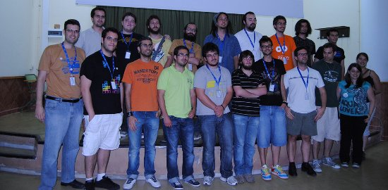
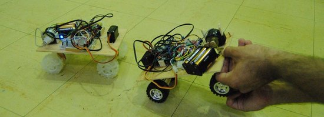

gLapse: take screenshots, glue them together
Jun 1, 2011 · 1 minute read · CommentsProjects
gLapse GUI (click to view at full size)
© 2022 David Saltares.
Powered by Hugo and Hyde-X.
Hosted on Github Pages.
gLapse GUI (click to view at full size)

Several days ago I was a bit tired of working on IberOgre, the Spanish Ogre wiki so I started procrastinating. Then I discovered the Ludum Dare 48h game development competition and I was amazed about the idea. Lots of developers use to record their progress in time lapse videos to show how their mini games evolved. There are very good Windows tools to do that but on GNU/Linux systems you have to use command line scripts and that’s where gLapse comes into play.
gLapse is a visual GNU/Linux tools to take desktop screenshots at a fixed custom time interval and them glue them together to make a time lapse video. It can be used to show your progress in any project you"re working on. It doesn’t have too many features but hey, the bright side is that gLapse is extremely easy to use.
It’s written in Python using pyGTK and Glade as GUI designing tool. Internally it uses ffmpeg to encode video and scrot to take screenshots. Feel free to use it as you wish since it’s licensed under the GPL v3 license.

I released gLapse 0.1 two weeks ago and gLapse 0.2 launched two days ago, the following list shows the features it has now:
If you happen to find any kind of problem using gLapse or have a feature request, please go directly to the issues section at Google Code. Contributions are hugely welcome!
I’ve been thinking a lot about improving gLapse and here are some possible new features for next versions:

Ayer se celebró la !BarraLibreCamp en la UCA, una jornada de ponencias y talleres informales en la que todos los participantes deben aportar algo. Al final es un día lleno de actividades heterogéneas para pasarlo bien con amigos de todas partes y hablar (o flamear) sobre intereses comunes. A continuación, un pequeño resumen del evento y mi aportación.
Estas son todas las actividades que os perdisteis. Podéis encontrar muchos de los materiales utilizados en la wiki.

Hace poco más de un mes estuve trasteando con la popular biblioteca de colisiones y simulaciones físicas Box2D (utilizada por Angry Birds) y vi que era extremadamente sencilla de utilizar. Sin saber nada de ella conseguí una demo con Gosu para la parte gráfica en poco más de una hora. Rápidamente se me iluminó la bombilla, ¡era el tema perfecto para la !BarraLibreCamp! Creo y espero que a la gente le pareció interesante así que os dejo todo el material (código GPL v3 + transparencias) para que podáis aprender por vuestra cuenta.
Obviando la cantidad de cosas nuevas que se aprenden, lo mejor de estos eventos es la convivencia y el buen ambiente que se respira. Nada como discutir sobre temas variados, últimas noticias y abrir un poco las miras. ¡Además vino mucha gente de Granada, Sevilla y Málaga!
Lo tengo clarísimo, para la próxima que haya por aquí cerca, me apunto sin dudarlo. Gracias a Ana Rey por sus fotografías (CC by-sa).
Este nuevo vídeo nos muestra una prueba del sistema de lanzamiento de proyectiles mágicos en Sion Tower. El protagonista puede lanzar hechizos de varios tipos que impactan con los elementos sólidos del escenario produciendo una pequeña explosión. Para los efectos visuales se utiliza el sistema de partículas de Ogre y, aunque aún queda margen para la mejora, el resultado es aceptable. Sion Tower cuenta con un sistema de audio 3D pero no se han incluido efectos ya que estoy a la espera del colaborador encargado de dicho apartado.
¡Próximamente más novedades!

Tras publicar varios artículos en IberOgre, he decidido retomar el trabajo en Sion Tower con el objetivo de tener una versión inicial a finales de julio. La primera tarea que he llevado a cabo es una refactorización del sistema de actores con el objetivo de hacerlo más extensible y evitar la duplicación de código en la medida de lo posible aunque crezca la verticalidad en la jerarquía. Por el momento no todas las clases están implementadas pero sí diseñadas. A continuación, una pequeña explicación del sistema.
El sistema de actores está compuesto por las siguientes clases:

En GameObject contamos con el enumerado Type para distinguir entre tipos de objetos de juego. Se cuenta con un método getType virtual puro que cada clase deberá implementar devolviendo el valor del enumerado correspondiente. De esta forma podemos conocer el tipo de un objeto de juego a partir de un GameObject* y hacer casting sin peligro en caso de ser absolutamente necesario. También es posible utilizar el tipo de objeto para hacer un filtrado en la detección de colisiones.
class GameObject {
public:
enum Type {
SIMPLEMESH = 0,
FLOOR = 1,
SCENE = 2,
PLAYER = 3,
ENEMY = 4,
SPELL = 5
};
virtual Type getType() const = 0;
...
};
Podéis conocer a fondo el sistema en la rama correspondiente de la Forja de Red Iris. En breve, os mostraré un vídeo con el sistema de lanzamiento de proyectiles mágicos funcionando.